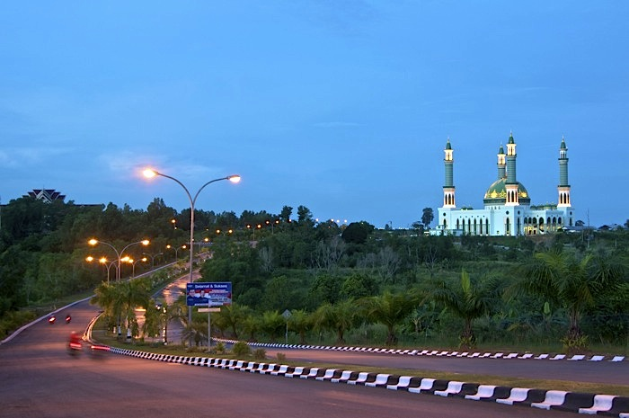

Sangatta, East Kutai
East Borneo
This is the city I grew up in, Sangatta. It is in East Kutai, East Borneo. It is a small city that grew because of its coal deposit and because of that most of the people living there works in the mining industry. Its strategic location is the reason Sangatta became the capital of East Kutai. There are not many recreation options in Sangatta since the initial purpose of the city is for settlement of the coal mining company’s worker. Due to that, most people choose to spend their holiday in bigger city, such as Samarinda, even though it is much farther. It takes 4 hours of travel to go from Sangatta to the capital of East Borneo, Samarinda.